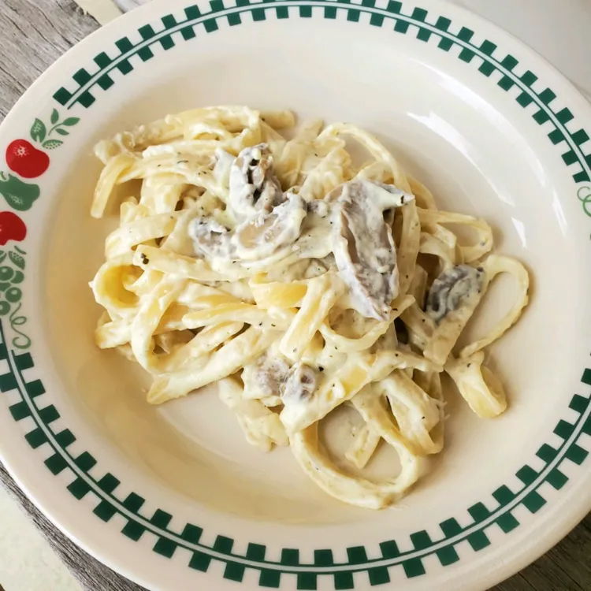

Home
White Sauce Pasta

Creamy, rich, and delicious white sauce pasta is the ultimate comfort food
made with garlic, butter, milk, and cheese.
Ingredients
- 8 ounces penne or fettuccine pasta
- 3 tablespoons butter
- 2 cloves garlic, minced
- 3 tablespoons all-purpose flour
- 2 cups warm milk
- ½ cup grated Parmesan cheese
- ½ teaspoon Italian seasoning
- Salt and black pepper to taste
Steps
- Boil the pasta in salted water until al dente, then drain.
- Melt butter in a skillet over medium heat; sauté minced garlic for 1 minute.
- Sprinkle in the flour and whisk continuously for 1-2 minutes.
- Slowly pour in warm milk while whisking to prevent lumps until the sauce thickens.
- Stir in Parmesan cheese, Italian seasoning, salt, and pepper until smooth and creamy.
- Toss the cooked pasta into the white sauce, mix well, and serve hot!